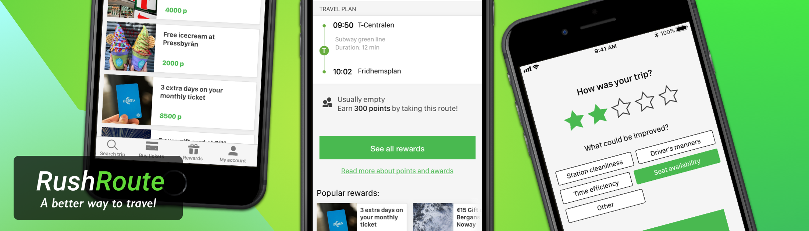

See my work ➜
RushRoute
Objective
The aim of the case was to present a desirable, viable and feasible concept to SL (Stockholm Public Transport) on how we can make more people use public transport rather than driving cars, while also providing a value to all stakeholders. Since we had a timeline of 9 months, we had the possibility to allocate a lot ot time for research before starting to ideate.
My role
We were a cross-functional, diverse team, with competences in project management, design, development and business. Because of this, I was in partly in charge of the research and fully in charge of the actual design of prototyping of the final solution. Some examples of tasks:
Research
To provide a solid foundation and clear understanding of our end users before the ideation phase, we performed a number of surveys concerning people’s travel habits. We also performed interviews with various stakeholders within the company, to get a grasp of the technical possibilities and the viability of our business case. >Bild på survey-resultat
Design process

Our research made it pretty clear that public transport has to offer something extra to motivate people to skip the car and use public transport instead. The research also showed us the biggest perceived pains of taking public transport. These findings guided us during our ideation phase and laid the groundwork for the whole concept.
Results
An incentive program which give end users personal rewards for traveling with public transportation outside rush hours, and by leaving a review after their trip. This program is accompanied by a mobile application which can be integrated in the travel planning app for the specific public transportation company. What this solution offers is a way for public transport companies to balance the strain on different transport modes during rush-hour, which leads to shorter lines and increased punctuality and reliability. On top of this, the data collected from the trip review feature can be used to further improve the public transport experience.
The final concept was presented in Oslo and was well received by various stakeholders within the company and stakeholders from public transport companies. I made the video below as part of the concept pitch: